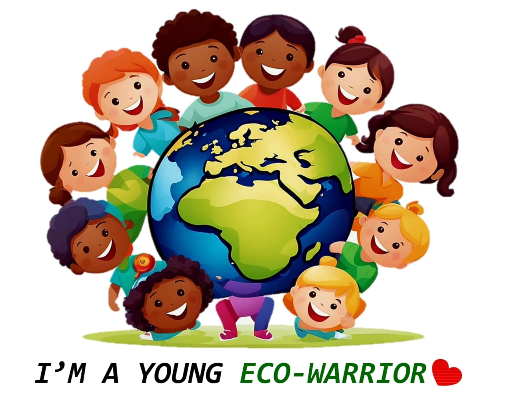
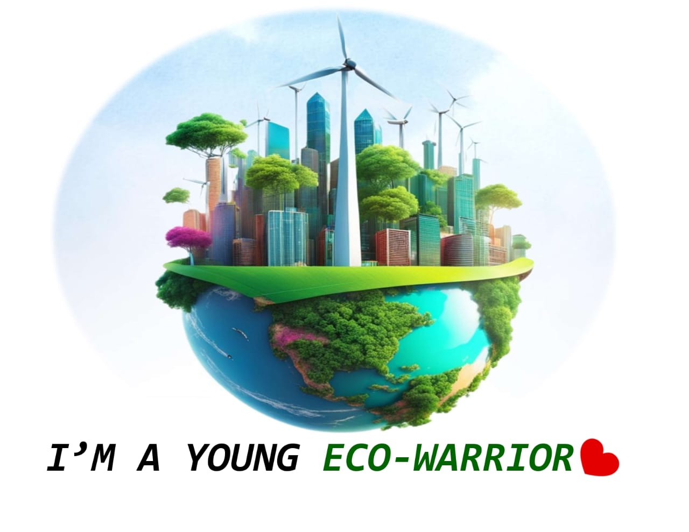

Leading the charge in climate justice
 Young Eco-Warriors Global is a youth-led organization dedicated to environmental conservation and climate action. Our mission is to empower young people to become leaders in protecting the planet for future generations.
Learn moreExplore our initiatives and campaigns aimed at addressing pressing environmental issues such as deforestation, plastic pollution, and climate change.
View ProjectsJoin us in our mission to create a sustainable future by supporting our work. Your donations help fund our projects and educational programs.
Get InvolvedHave questions or want to collaborate? Reach out to us and let's work together to make a positive impact on the environment.
Get in Touch